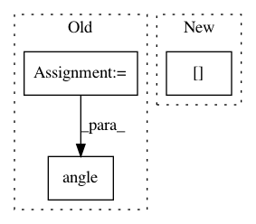

3dec3c177db7fb2c77eb38346a8d51075739d4d3,nt/speech_enhancement/merl_masks.py,,phase_sensitive_mask,#Any#Any#Any#,83
Before Change
:return: Mask with shape (frames, 1, features)
out_type = S.real.dtype
Y = S + N
theta = np.angle(S) - np.angle(Y)
return (np.abs(S) / (np.abs(Y) + eps) * np.cos(theta)).astype(out_type)
def ideal_complex_mask(S, N):
After Change
:param eps: Regularizing parameter to avoid division by zero.
:return: Mask with shape (frames, 1, features)
return mask.phase_sensitive_mask(
np.concatenate([S, N], 1),
component_axis=1,
eps=eps
)[:, [0], :]
def ideal_complex_mask(S, N):
Calculates the ideal complex mask.
In pattern: SUPERPATTERN
Frequency: 3
Non-data size: 3
Instances
Project Name: fgnt/pb_bss
Commit Name: 3dec3c177db7fb2c77eb38346a8d51075739d4d3
Time: 2016-08-02
Author: mail@lukas-drude.de
File Name: nt/speech_enhancement/merl_masks.py
Class Name:
Method Name: phase_sensitive_mask
Project Name: pytorch/audio
Commit Name: 5c0773f634803b2ce4180ef57a9c655cd36c6eaf
Time: 2019-09-20
Author: ksanjeevancabeza@gmail.com
File Name: torchaudio/functional.py
Class Name:
Method Name: phase_vocoder
Project Name: r9y9/nnmnkwii
Commit Name: b956d586d8fdb50e60a310315264ff4ee82b35aa
Time: 2017-09-27
Author: zryuichi@gmail.com
File Name: nnmnkwii/preprocessing/modspec.py
Class Name:
Method Name: modphase